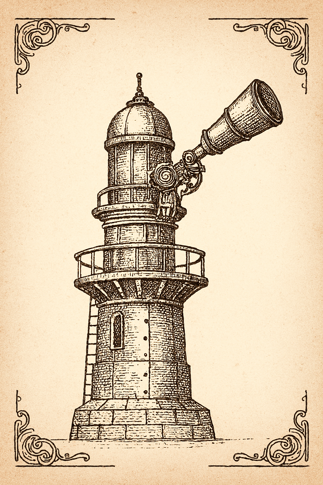

The Whispering Lighthouse of Orkney Dispatch from Grim Ness  The Whispering Lighthouse, fitted with an electro-phonic foghorn apparatus. At Grim Ness, a lighthouse has been fitted with an electro-phonic foghorn apparatus...